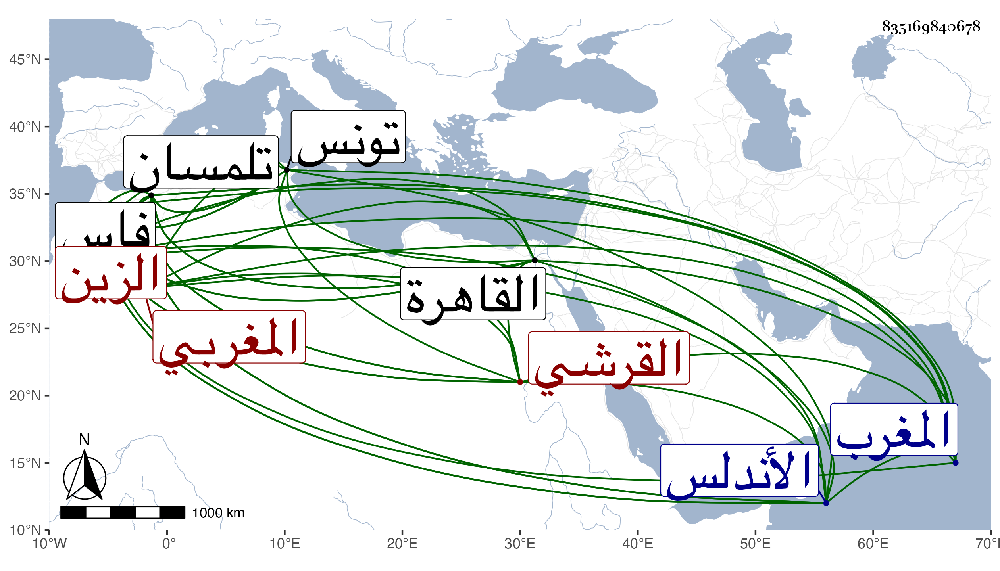

0902Sakhawi.DawLamic.ITO20230111-ara1.EIS1600.835169840678
Biography ID: 835169840678
67
عباس بن أحمد بن عباس الزين القرشي المغربي من الشاوية ومن بني مزورة عرب وطنوا فاس . ولد في سنة سبع وثلاثين وثمانمائة تقريبا بصحراء تامستا آخر بلاد المغرب ، وكان أبوه من شيوخ العرب فكان يحضر له الفقهاء فقرأ القرآن والبزي في قراءة نافع والخرازي في الرسم وكذا في الضبط والجرومية والألفية ومقدمة ابن باب شاد والرسالة ثم انتقل إلى فاس فتلا بالسبع على إبراهيم المصمودي الحاج وأخذ عنه في العربية وكذا أخذ فيها عن أبي القاسم بن يوسف وأحمد بن العجل ومحمد الصغير وفي العروض عن علي المسوسي وتحول إلى تلمسان فأخذ الفرائض والحساب عن أحمد الكماد والنحو كالتسهيل والمغني وأصول الفقه كمختصر ابن الحاجب وأصول الدين كالارشاد لامام الحرمين والمنطق كالجمل للخونجي والمعاني والبيان كالتلخيص كل ذلك عن محمد بن العباس بتلمسان بل وقرأ عليه صحيح البخاري ومسلم والمقامات للحريري والفصيح لثعلب ومقصورة ابن دريد والطب كالرجز لابن سينا والمنصوري والموجز عن الشريف الحسني ولقي هناك محمدا الكازروني فقرأ عليه المطول والقطب ثم دخل الأندلس فتلا بالسبع أيضا على محمد الموجاري وتونس فأخذ عن إبراهيم الخدري الارشاد لامام الحرمين والمقترح لأبي العز مظفر في أصول الدين أيضا وعلى محمد الواصلي شرح المعالم الدينية لابن التلمساني وشرح جمل الخونجي لابن واصل في آخرين لقيهم بهذه الأماكن وغيرها وقدم القاهرة في سنة تسع وستين فقطنها ولازم الشمني والكافياجي وغيرهما وأكثر التردد للأكابر من الأمراء والمباشرين وغيرهما وزاد على الحد حتى صار عند أكثرهم مطرحا بل اتهم بقضية قيل انه واطأ على الاختلاس فيها وما أجوز ذلك ولكنها محنة ، وحج صحبة المنصور وتردد إلى حتى أخذ شرحي لمنظومة ابن الجزري دراية وغيره رواية ، وكان كثير الاستحضار والمحفوظ طارحا للتكلف محبا في المذاكرة غير متثبت فيما يذكره سيما وفراغه للمطالعة قليل وعلى كل حال فهو معدود في الفضلاء وأكثر ترجمته من قوله . مات في ربيع الأول سنة تسع وثمانين بعد أن تعلل مدة طويلة ووجد له تركة تزيد على ما كان يظن به رحمه الله وسامحه وإيانا .
